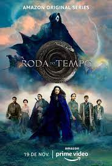

Obi-Wan Kenobi

Sinopse
Dez anos depois dos trágicos eventos de "A Vingança dos Sith", Obi-Wan Kenobi está exilado em Tatooine, protegendo a criança que poderá derrotar o Império e trazer a paz para a galáxia...
Sinopse
Hughie Campbell (Jack Quaid) fica traumatizado depois que sua namorada Robin (Jess Salgueiro) é morta em um impacto de alta velocidade com o super-herói Trem-Bala (Jessie Usher). Quando conhece Billy Bruto (Karl Urban), um vigilante que odeia qualquer um com poderes, Hughie vê a chance de expor a corrupção dos super-heróis, mas, para isso, ele precisará plantar uma escuta na torre da Vought - a empresa responsável pelos Sete, o principal time de super-heróis dos Estados Unidos, do qual Trem-Bala faz parte. O plano sai de controle quando Hughie é descoberto por Translúcido (Alex Hassell), que resolve segui-lo e confrontá-lo; assim, Hughie e Billy são obrigados a sequestrar e manter o herói em cativeiro. Para isso, os rapazes vão contar com a ajuda de Leitinho (Laz Alonso) e Francês (Tomer Kapon), dois antigos companheiros de Billy que sabem de sua obsessão em combater super-heróis e, sobretudo, em se vingar daquele que é o mais amado pela população: Capitão Pátria (Antony Starr), o líder dos Sete que, 8 anos antes, estuprou sua esposa Becca (Shantel VanSanten) - de quem Billy nunca mais teve notícias desde então. Baseada na HQ homônima de Garth Ennis.
A Roda do Tempo
Sinopse
Passada em um mundo épico e extenso onde a magia existe e apenas certas mulheres têm permissão para acessá-la, a história acompanha Moiraine, membro da poderosa organização feminina chamada Aes Sedai. Quando a protagonista chega na pequena cidade de Two Rivers, ela embarca em uma perigosa jornada com cinco jovens, um dos quais foi profetizado como o Dragão Renascido, que salvará ou destruirá a humanidade